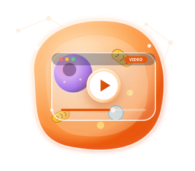

search
tune
Video Pembelajaran
Terokai dunia sel melalui video pembelajaran yang menarik dan interaktif untuk memahami struktur, fungsi dan keunikan sel haiwan serta sel tumbuhan dengan lebih mudah.
play_circle
Video interaktif • Rujukan • Penerangan

play_arrow
3:45
Apakah Itu Sel?
more_vertKenali unit asas kehidupan dan bagaimana sel membina organisma yang kompleks.
Sains Tingkatan 1
1.2k tontonan
play_arrow
4:20
Struktur Sel Haiwan
more_vertMeneroka komponen penting dalam sel haiwan seperti nukleus dan mitokondria.
Biologi
850 tontonan
play_arrow
5:10
Struktur Sel Tumbuhan
more_vertKenali perbezaan unik sel tumbuhan termasuk dinding sel dan kloroplas.
Botani
2.1k tontonan
play_arrow
6:00
Fungsi Setiap Organel
more_vertMemahami peranan "kilang" kecil di dalam sel yang memastikan kehidupan berterusan.
Fungsi Sel
1.5k tontonan